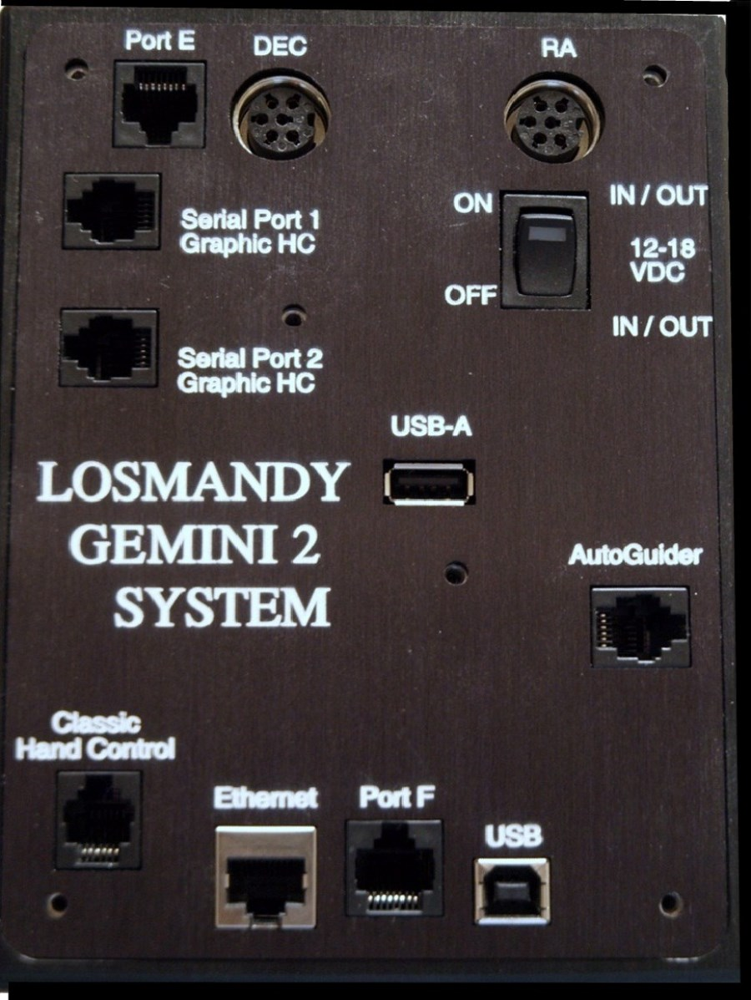
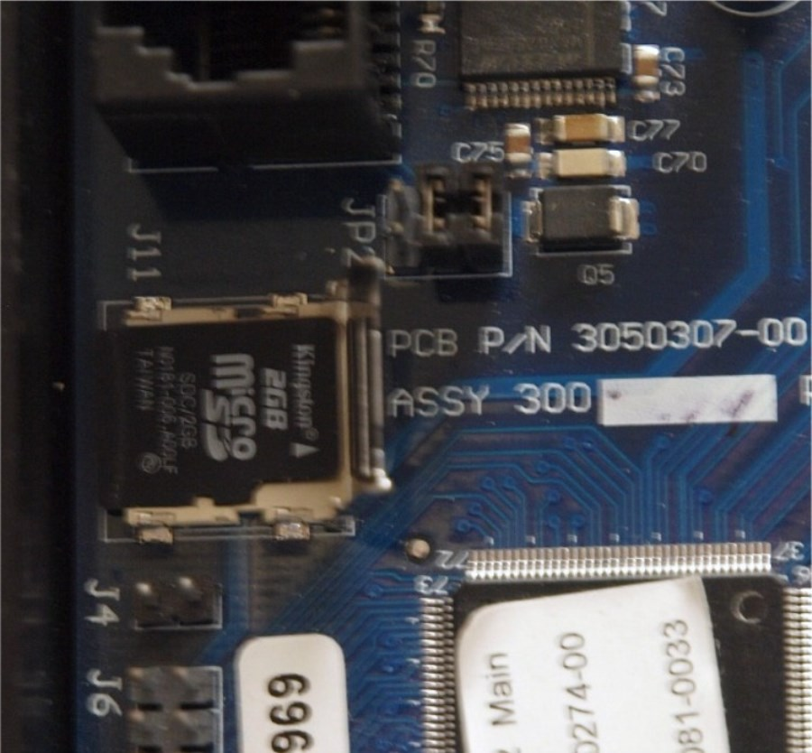
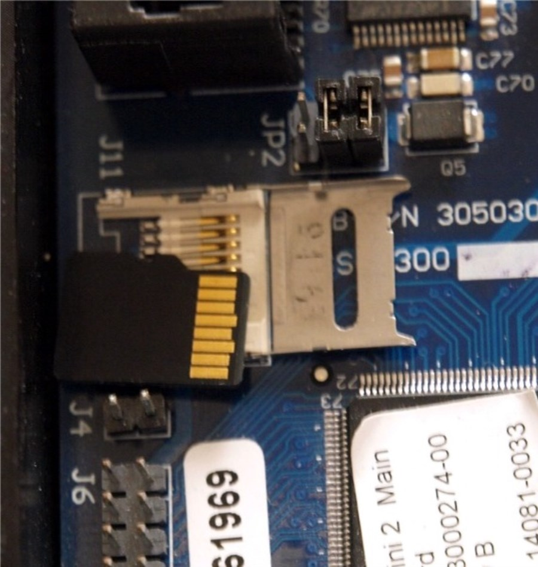
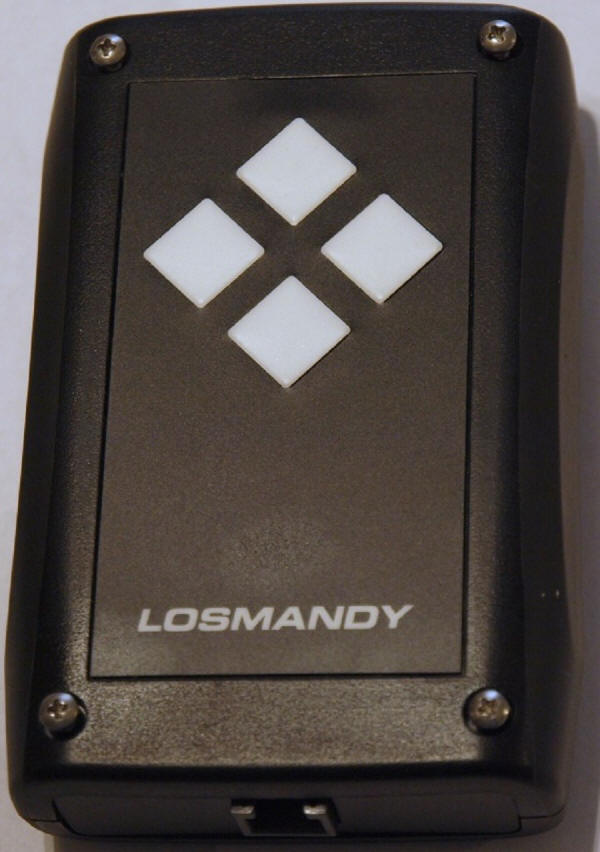

|
|
Removing and Reinstalling the micro-SDcard in the Main Unit |
To See a movie of removing main micro SDcard either
click here for one from this site,
or here for a
U-tube version. |

|
| 1. Gemini with cover in place. Remove the 6 Allen head screws. 1/16 Inch Allen wrench will be necessary
|

|
| 2. The Gemini 2 with cover removed. See the micro-SDcard socket on
the left middle side. It is always a good idea to slide a
piece of paper under the battery clip when removing and replacing
the micro-SDcard |

|
| 3. This is a picture with the cover vertical. You do this by
first sliding the cover to the right slightly, to unlock it.
Then you can grab the left side and slowly lift it up. It
is on a sliding hinge, hinged on the right side.
|

|
| 4.You can see it even more opened.
|

|
| 5. Here it is fully opened. I have turned over the micro-SDcard.
Notice the contacts still point to the right.
|

|
| 6. This is with the micro-SDcard complete removed. To replace
the micro-SDcard, just follow the reverse steps.
Make sure that the micro-SDCard is seated
correctly before trying to close the cover. After you
get the cover closed, make sure you slide it to the left to lock
it in place. Don't forget to remove the piece of paper
from under the battery clip.
|
7. To reprogram the micro-SDcard in the main unit with a reader/writer go
to:
Rebuilding Main unit SDcard Firmware
Remember that doing this will normally reset the Gemini-2 default IP address back to
192.168.0.111 |
| During the development phase of Gemini 2, you will likely need to update the firmware in
the hand controller and main unit fairly frequently. While this will normally be done through
the web interface or the FTP interface, or the new Firmware
loader program, it is possible that you may need
to disassemble the hand controller or remove the cover from the main board. Please be aware of
these warnings if you do so.
|
Please note, that if you damage either the Hand Controller
or the Gemini Main Unit, you are doing this at your own risk. Repair will be solely at
Losmandy's discretion, and you may be liable for repair cost and shipping cost.
You might want to contact Losmandy for permission before doing this,
to maintain your warranty. |
1. When disassembling the hand controller,
be forewarned that the gasket that is between the LCD and top
plastic cover sometimes sticks to the LCD. If it does stick, this
can be very strong, and several have broken their screen trying to get it unstuck, or pulled the LCD off the base PCB that it is mounted to. The best
way to remove the top cover after removing the 4 screws is to gently push down on the LCD
glass while slowing loosing the top cover, separating the glass from the gasket. See
Movie
on how to open up the HC in MP4 format.
Putting the Hand Controller in a warm place also might help loosen
the gasket. If you place it in direct sunlight, turn the LCD down,
so that the sunlight is not shining on it. Direct sunlight can
damage LCD's. I cannot give enough of a strong warning about
taking the hand controller apart. This is especially true if
you do not live in the USA. If you live in the USA and
feel that the hand controller must be taken apart, call Losmandy and
see if they are willing to do it for you.
There are now 2 different versions of that hand controller.
The first one is internally referred to at Losmandy referred to as BlueScreen
version. This document deals with that version. I found
out today July 12, 2013 that a newer version has been shipping and
about 200 of them have shipped. The micro SD card holder in
that hand controller is the same type as in the main units
motherboard. It does use the same size LCD, and suppose to have
non-stick Gaskets, and I think no hidden buttons at the bottoms of
the LCD. It was designed by Losmandy, and is not quite as
dependent on manufactures dropping the manufacture of LCD screens as
the older BlueScreen version was. This was a necessary change
because the manufacture of the BlueScreen LCD module stopped
producing it. Since I don't have that version yet, I
cannot tell you more about it. |
2. Also while apart, there are icons at the bottom of the
LCD screen. They are touch sensitive. If you are touching any of these while you apply
power to the LCD module, or hand controller the hand controller will not boot. The
gasket can also cause this same effect if pushing on these icons to hard. In later
units this gasket has been shaved a few hundred’s of a mm to prevent this.
|
3. If you remove the front panel of the main Gemini unit, do
not plug the motor cables into the unit. Sideways pressure on the motor connectors can
break them. The front panel provides the mechanical stability to keep this from happening.
You can safely power up the Gemini 2 without motors connected. You might receive motor
lag messages, but that is normal, when no motors are connected.
You can stop this by using the Track menu and select "Terrestrial"
as the speed. |
|
|
The micro-SDcards supplied by Losmandy are 2GB cards
for both the main unit and hand controller. This
is the recommended size. Both SD and SDHC types are supported.
Use the default Fat size for the 2Gbyte size of micro-SDcards to
format them. 4GB is the maximum size but has not been tested by the writer of the
firmware. If using 4GB micro-SDcards, they MUST be formatted using
Fat32. The default under Windows 7 is FAT64, Do not use this for
formatting the SDcards, it will not work.
If you have to format the SD card it is best to download the official
SDcard format routine from the
https://www.sdcard.org
download section.
This instructions of updating the main card is at
Updating SDcard with reader/writer |
|

|
| 1.The first step is to completely remove the 4 screws from the back.
|

|
| 2. Then hold down on the LCD screen while gently prying up the top cover.
|

|
3. Remove Face Plate
|

|
| 4. You can see our target socket in the upper right corner of the
picture. It is silver in color. No SDCard is in the
socket. This is the back side of the PCB that holds the LCD. |

|
| 5. The micro-SDcard is below the PCB-but above the screwdriver tip.
|

|
| 6. The micro SD card partly popped out. This is accomplished by pressing in on it first
then letting it pop out. When you reinstall it
you do the reverse. Push it in until it stops and then let go.
|

7. You can see the card part way out now. When you pull it out completely you will see that it has the contacts pointing up.
|

|
| 8. See gold contacts. You can now take the card and put it
into a micro-SDcard reader. You would follow the instruction on
rebuilding the file structure on the that. This will be out
lined in a different document.
|

|
| 9. You can see that I have found the holder and started to slide the card
back into it's holder.
|

|
| 10. micro-SDcard almost all the way in.
|

|
| 11. micro-SDcard fully inserted
|
12.
To reprogram the micro-SDcard in the Hand-controller unit with a reader/writer go
to:
Rebuilding Hand-Controller unit SDcard Firmware |